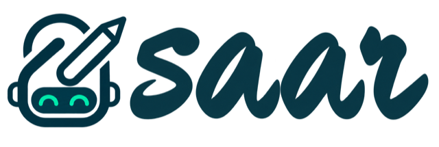
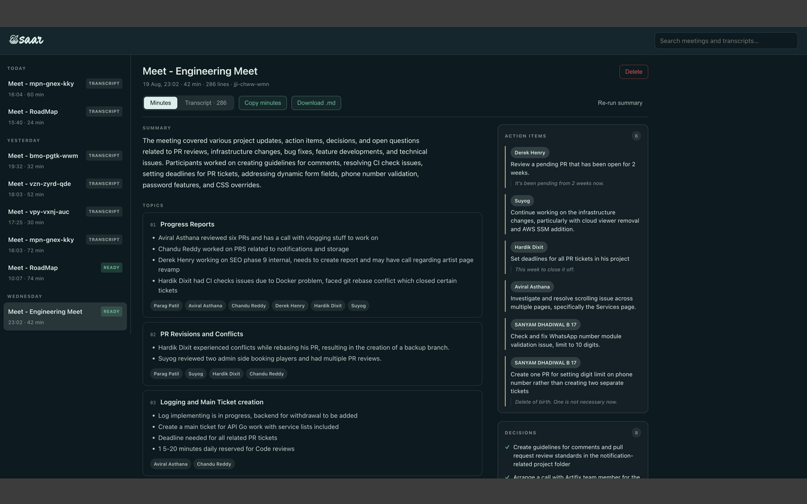
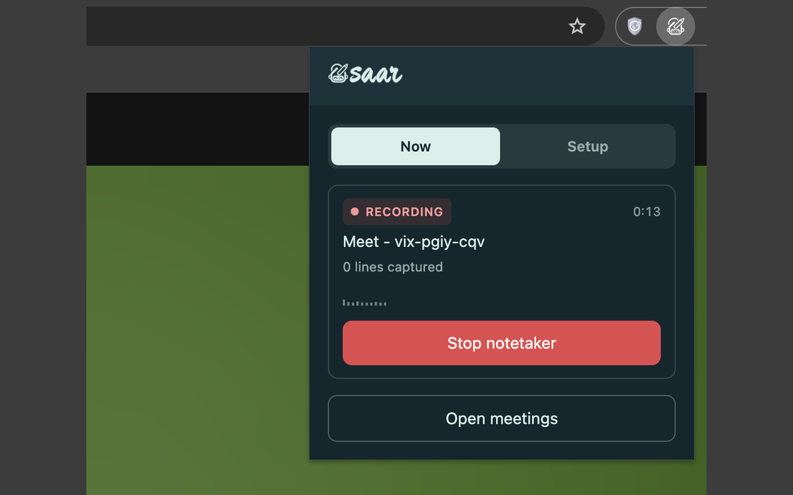

AI note-taking for your meetings.
It sits in your calls, writes down what was said and who said it, and turns it into a summary and minutes.

What it does
When you join a Google Meet call, Saar opens a second, muted tab signed in as a notetaker account, joins the meeting with its microphone and camera off, turns on live captions, and records them as they arrive. When the meeting ends it hands the transcript to a language model and writes the minutes.
- Joins only after you do. Saar waits until it can see you are actually in the call — sitting in the green room does not summon a notetaker.
- Never joins live. It refuses to press Join until it has confirmed both the microphone and camera read as off.
- Knows when to stop. Nine independent stop signals mean a session cannot outlive the meeting, even if your laptop sleeps or Chrome kills the worker.
- Minutes with receipts. Summary, topics, decisions and action items — every action item carries the sentence it came from.
- Yours by default. Transcripts live in IndexedDB on your machine. AI summaries are off until you turn them on, defaulting to a local Ollama.
- Survives being killed. Summarising persists between model calls, so an MV3 worker dying mid-run costs one chunk, not the meeting.

Privacy
Saar has no backend. There is no Saar server, no account to create,
and no analytics, telemetry, crash reporting or tracking of any kind.
Transcripts and minutes stay in your Chrome profile. The only things
Saar sends anywhere are the transcript to the AI provider you choose
(off by default, local Ollama by default when on), and a request to
meet.google.com to list the Google accounts signed into
your profile.